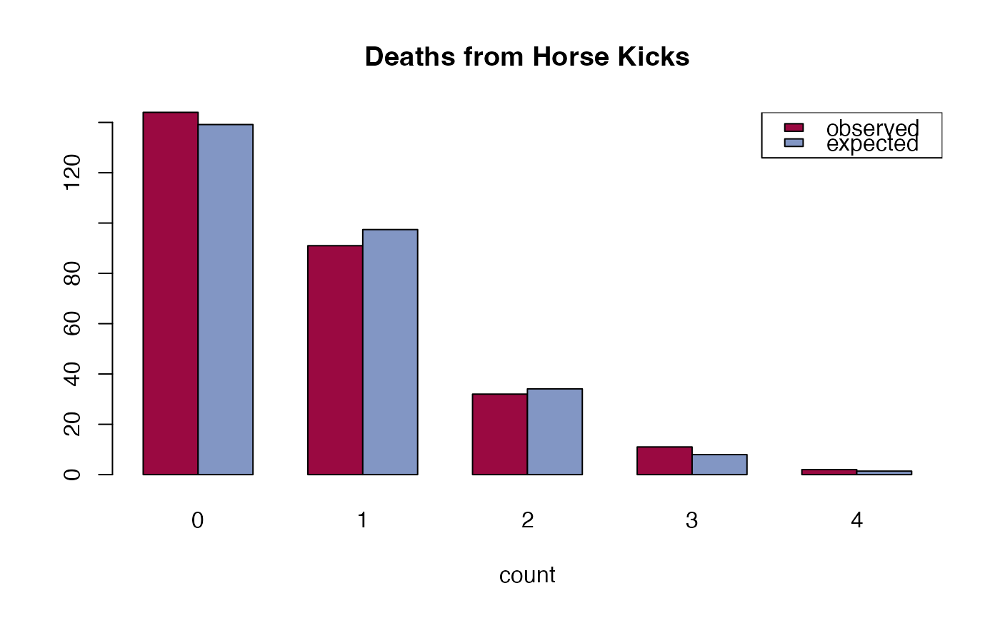

PoissonCI.RdComputes the confidence intervals of a poisson distributed variable's lambda. Several methods are implemented, see details.
number of events.
time base for event count.
confidence level, defaults to 0.95.
a character string specifying the side of the confidence interval, must be one of "two.sided" (default),
"left" or "right". You can specify just the initial letter. "left" would be analogue to a hypothesis of
"greater" in a t.test.
character string specifing which method to use; can be one out of
"wald", "score", "exact" or "byar".
Method can be abbreviated. See details. Defaults to "score".
The Wald interval uses the asymptotic normality of the test statistic.
Byar's method is quite a good approximation. Rothman and Boice (1979) mention that these limits were first proposed by Byar (unpublished).
A vector with 3 elements for estimate, lower confidence intervall and upper for the upper one.
Agresti, A. and Coull, B.A. (1998) Approximate is better than "exact" for interval estimation of binomial proportions. American Statistician, 52, pp. 119-126.
Rothman KJ, Boice JD, Jr. (1979) Epidemiologic Analysis with a Programmable Calculator (NIH Publication 79-1649). Washington DC: US Government Printing Office.
Garwood, F. (1936) Fiducial Limits for the Poisson distribution. Biometrika 28:437-442.
# the horse kick example
count <- 0:4
deaths <- c(144, 91, 32, 11, 2)
n <- sum(deaths)
x <- sum(count * deaths)
lambda <- x/n
PoissonCI(x=x, n=n, method = c("exact","score", "wald", "byar"))
#> est lwr.ci upr.ci
#> exact 0.7 0.6054271 0.8051570
#> score 0.7 0.6086218 0.8050977
#> wald 0.7 0.6020018 0.7979982
#> byar 0.7 0.6070833 0.8032497
exp <- dpois(0:4, lambda) * n
barplot(rbind(deaths, exp * n/sum(exp)), names=0:4, beside=TRUE,
col=c(DescTools::hred, DescTools::hblue), main = "Deaths from Horse Kicks",
xlab = "count")
legend("topright", legend=c("observed","expected"),
fill=c(DescTools::hred, DescTools::hblue), bg="white")

## SMR, Welsh Nickel workers
PoissonCI(x=137, n=24.19893)
#> est lwr.ci upr.ci
#> [1,] 5.661407 4.753125 6.692709